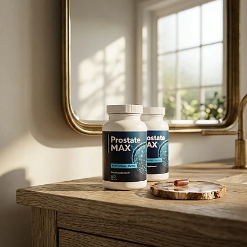

What Is Prostate Max And How Does It Work?
Prostate Max is a dietary supplement in capsule form designed to support prostate health, comfortable urinary function, and restful nights for men who want to address frequent nighttime trips to the bathroom, a weaker flow, and the loss of confidence that can come with age through a natural, plant-based approach — without complicated routines or temporary quick fixes.
According to the official website, it combines natural ingredients that support prostate health balance and protection, including Golden Bamboo, Asian Epimedium, Saw Palmetto, Pygeum Africanum, and Pumpkin Seed Extract, in a simple routine of one capsule a day, taken before bed.
The front of the bottle shown on the official website also lists Reishi, Shiitake, and Maitake mushrooms, while the ingredient section of the sales page names the plants above. The website does not publish the full Supplement Facts panel, so the label on your bottle is the best reference for the exact formula.
Rather than acting as a short-lived artificial fix, Prostate Max focuses on a whole-formula approach, working gradually alongside healthy habits to help maintain comfortable urinary function and better sleep over time.
With consistent daily use, the formula is intended to support fewer interruptions at night, more comfortable days, and renewed confidence, especially when combined with good hydration habits, a balanced diet, and regular movement.
From a practical standpoint, Prostate Max is a daily prostate support capsule designed to fit into a bedtime routine, with no powders to mix and nothing to measure.
It is a dietary supplement, not a medicine, and it does not replace the care of a doctor. Men with urinary symptoms should have a medical evaluation, because the same signs can have different causes, and anyone already in treatment should keep following their physician's guidance.
Prostate Max Ingredients
The official website names the main ingredients of Prostate Max, but it does not publish the Supplement Facts panel or the amount of each ingredient. These are the ingredients listed in its ingredient section:
Golden Bamboo: A bamboo extract that the official website includes to support prostate health balance.
Asian Epimedium: A traditional botanical with antioxidant properties, commonly found in men's wellness formulas.
Saw Palmetto: A palm berry extract widely used to support prostate and urinary health in men.
Pygeum Africanum: An African tree bark extract traditionally used to support urinary comfort.
Pumpkin Seed Extract: A seed extract long used to support bladder and prostate health.
Together, these ingredients are designed to support prostate health and comfortable urinary function from within. The front of the bottle also shows Reishi, Shiitake, and Maitake, and because the website and the bottle do not list exactly the same ingredients, it is worth reading the label or asking customer support before ordering.
Prostate Max is designed for daily use, offering a natural, non-prescription approach to supporting prostate wellness, without complicated routines.
Prostate Max Side Effects
Prostate Max is generally considered well tolerated and is designed for adult men who are looking for a natural, plant-based approach to prostate support, especially those who prefer an easy one-capsule bedtime routine to support urinary comfort and restful sleep.
According to the official FAQ, the ingredients are 100% natural, toxin-free, and laboratory-tested, and no significant side effects have been reported. Because the website does not publish the label, the safest approach is to read the Supplement Facts panel on the bottle before the first capsule.
With no widespread reports of serious side effects, Prostate Max is generally considered a well-tolerated option. Still, Saw Palmetto can interact with blood thinners and hormone-related medications, Epimedium may affect blood pressure, and mushroom extracts may interact with medications for blood sugar or the immune system. The official FAQ recommends showing the label to your doctor if you take any medication or have a pre-existing health condition. It is not intended to diagnose, treat, cure, or prevent any disease, and individual results may vary.
Urinary symptoms such as frequent urination, a weak flow, or pain should always be checked by a doctor before relying on any supplement, and men taking medication for the prostate should not stop it without medical guidance.
Prostate Max Dosage
The recommended Prostate Max dosage, according to the official FAQ, is one capsule a day, before bed, with a glass of water, and it is designed to fit easily into a daily routine, making consistency simple and convenient. As an easy daily capsule, it requires no powders to mix and nothing to measure.
The official FAQ explains that taking it at night supports absorption during sleep. It also mentions that some men are advised to take two capsules a day, but only after personalized guidance, so the standard routine is one capsule unless your label or your doctor says otherwise.
For best results, consistency is key. The bottle shown on the official website contains 60 capsules, and because plant-based support builds gradually, many men make it part of an ongoing wellness routine.
There is no need for complex schedules or multi-step routines. One capsule at bedtime is designed to build lasting support gradually alongside good hydration habits, a balanced diet, and regular movement. Keep the bottle closed, in a cool, dry place, and out of the reach of children.
As with any dietary supplement, it's important not to exceed the recommended dose and to check the label on your bottle. Prostate Max works best when used regularly, combined with healthy daily habits and the guidance of your healthcare professional.
Prostate Max – Refund Policy
You can order Prostate Max with confidence, knowing that every purchase is protected by a 60-day guarantee. According to the return policy, the 60 days start from the date of delivery, which allows you to try the formula and decide if it delivers the support you expect.
The policy explains the steps: confirm you are still within 60 days of delivery, email support with "Refund Request" in the subject line, and send all the bottles back, empty or not and opened or not, with a note containing your full name, email, and order number. Return shipping is paid by the customer.
How the refund process works: Ship all the bottles and the packing slip to PO Box 90129, Lakeland, FL 33804, the address listed in the return policy. Once the package arrives, the refund is processed within a few days, and you receive an email confirming it.
Customer Support Contact Information: contact@customercs.com or +1 925-231-0148, as listed on the contact page of the official website, which says the team replies within a matter of hours.
Refund Processing Time: According to the policy, the refund is processed a few days after the return is received; it may then take some time to appear on your statement, depending on your bank.
This refund policy is designed to give customers a clear path when trying Prostate Max, with every step and the return address published on the official website.
Prostate Max Customer Reviews
-
Phillip Harmon — Austin, TXVerified Purchase – 6 Bottles
“Before Prostate Max I used to wake up 5 or 6 times a night. Now I sleep straight through like a baby and wake up rested, my wife even thanked me for stopping disturbing her sleep”
-
Ronald Bates — Tampa, FLVerified Purchase – 6 Bottles
“I made my first long car journey in years without having to stop every time to look for a toilet, the feeling of freedom was indescribable. …”
-
Harold Jennings — Richmond, VAVerified Purchase – 6 Bottles
“Since starting Prostate Max, I’ve felt more confident, more active, and even accepted a woman’s invitation to dinner last week – I hadn’t done that for years since I was widowed”
Prostate Max – Where To Buy
Prostate Max is sold through its official website, so if you decide to try it, it's important to be careful about where you purchase it. The official website is the only sales channel the manufacturer lists, and it does not point to marketplaces such as Amazon, eBay, or Walmart.
Listings on third-party platforms may look similar but cannot be verified as authentic, raising concerns about safety, quality, and ingredient freshness. Products purchased outside the official source may not be covered by the 60-day guarantee.
For this reason, it makes sense to purchase Prostate Max only through the official website. Buying directly from the official source ensures you receive the authentic original product, with access to customer support and the full guarantee. According to the official FAQ, the purchase is a one-time order with no hidden automatic shipments or recurring charges.
To avoid counterfeit batches and ensure maximum quality, always verify that you are ordering from the official Prostate Max website before completing your purchase.
To ensure you’re getting the authentic product, most users choose to visit the official website.
Is Prostate Max A Scam?
Based on what the official website discloses, Prostate Max appears to be a real product: a capsule supplement sold through an established retailer (BuyGoods), with a published return policy, a return address, and customer support by phone and email. It is formulated to support prostate health and comfortable urinary function.
The ingredients named on the official website — Golden Bamboo, Asian Epimedium, Saw Palmetto, Pygeum Africanum, and Pumpkin Seed Extract — are well known in men's prostate formulas. The main points of attention are that the website does not publish the label, and that the bottle front lists mushrooms (Reishi, Shiitake, Maitake) that the ingredient section does not mention.
Another point of caution: parts of the sales copy make strong claims, such as percentages of prostate size reduction, that go beyond what a supplement can promise. It is best to focus on the ingredients, the guarantee, and a medical evaluation of any urinary symptoms.
The customers quoted on the official website describe sleeping through the night, taking long trips without stopping, and feeling more confident, and the formula offers an easy bedtime habit. Results vary from person to person, and no supplement replaces medical care or prescribed treatment.
Prostate Max is backed by a 60-day guarantee counted from delivery, and the return steps and address are published on the official website, which gives customers a clear path if the product does not meet their expectations.
If you're looking for a simple daily capsule to support prostate health and restful nights without complicated routines, Prostate Max is worth considering after talking to your doctor — especially when purchased directly from the official website.
For those who want to verify product details or check current availability, the official Prostate Max website remains the safest option.

Check Availability On Official Website